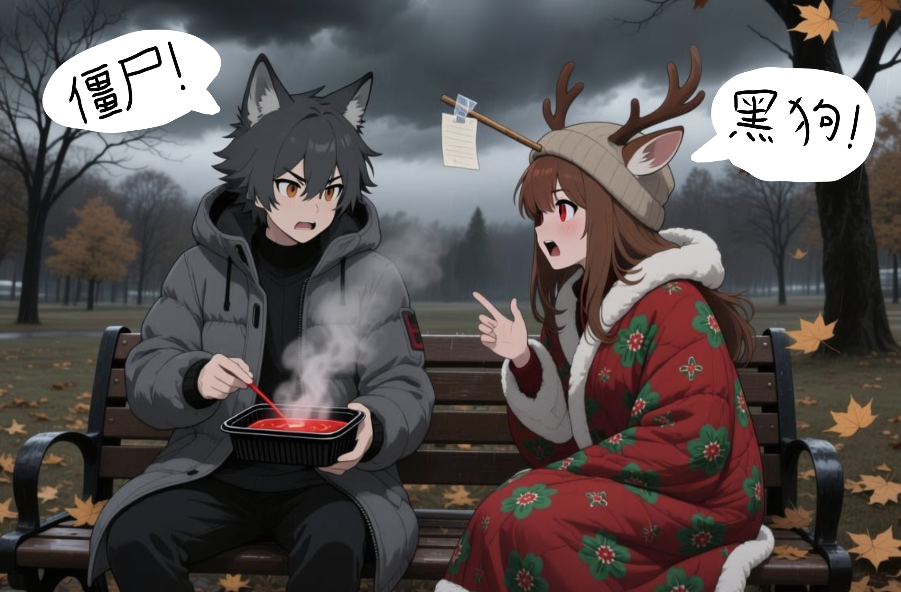

“你们都休息好了吗，休息了就出发吧。” 月海说。
“唉，又得我带路了。
先说一下啊，我只记得个大概的方向，待会可能还得找路。” 我说。
按照当时我走的路线，这里应该要沿着连接大门的主路一直走，直到......
等等我当时画了地图啊！
“等一下，我找一下地图。”
我翻出当时画的地图，黑暗商场到大超市的地图以及无人城市的地图都还在。
“你也会画地图啊？” 琳玉说。
“也不是很会，结构稍微复杂就画不了了，所以我没画多少地图。”
“哦~” 琳玉故作若有所思的点点头。
“那我们就出发吧。”
我从旁边货架上取下一把没拆封的斧头放进包里。
“我突然想起通往无人城市的路上挡着一扇锁上的门。”
我扫视了一下地图，向着下一站的方向走去。
“枫林小道”，“黑暗商场”，“云大陆”，“无人城市”。
只差四站了。
说起“枫林小道”，
还记得第一次到那里的场景，只见一条条蜿蜒的石板路安静地躺在无边的枫树林中。
蔚蓝色的天空中，太阳发出明媚的光，穿过树叶的缝隙，投射到地上，形成一小块光斑。
红色的枫叶从树上缓缓飘落，
落到小路上，发出轻微的响声。
偶尔会有一阵风吹过，轻轻带起地上的落叶，发出哗啦啦的声音。
那是我来到集群以来的第一次放松。
我没有再去找什么出口，只是慢无目的地走着，时而停下来，就像我平时在无人城市里做的那样。
不知走了多久......回过神来时，前方已经出现一个光点。
一阵轻微的冷风吹过，看来马上就要离开大超市了。
穿过另一扇大门，我们来到了“枫林小道”。
眼前的景象着实令我有些震惊。
天空阴云密布，寒风凛冽。
周围的枫树没了叶子，只剩树枝在风中摇曳。
地面积满了厚厚一层落叶，已经发黑，变脆。
透过落叶，可以隐约看见道路的界限。
我不自觉打了个哆嗦，毕竟我可没穿什么厚衣服。
“要不我们先回超市看看有没有棉袄？” 兰晓说。
“超市里会卖衣服吗？” 月海说。
“先回去看看吧，不然我们得冻死在这里。”
......
再次回到这里，我们五个人一人裹着一个大棉被，就像裹着一个斗篷。
不知为何，裹着被子让我感到了一种莫名的安心感。
为了让我的双手可以缩进被子，而不用拿地图，我做了一个帽子。
帽子的顶端被我戳了两个洞，为了让我的角可以穿过帽子。
帽子前插着一根从货架上拆下来的棕色金属小棍子，下面用胶带吊着地图。
或许我戴上这个帽子的样子会很奇怪，不过我想这是值得的，反正我走在前面带路。
走在铺满干落叶的路上，每走一步都会发出咔吧咔吧的声音，令我感到些许放松。
与此同时，寒风也在不断吹刮着我的脸，令我神经紧绷。
风声不断......
突然，我注意到前方出现了一个熟悉的身影。
是之前在开发区被绑架时隔壁房间的黑狗。
黑狗坐在路边的长椅上，穿着一件厚重的羽绒服，怀里捧着一碗冒着热气的方便面，不紧不慢地吃着。
黑狗看到我们，冲我们挥挥手，“嗨，你们也来了。”
“真巧啊，你也在这里。” 月海说。
“哟，你们的小队长找到了？几天不见怎么变僵尸了。”
“黑狗，你说谁说僵尸呢？”
“什么黑狗？
第一，我叫望夕，不叫黑狗。
第二，我是狼。
第三，我是灰毛。”
“好吧，望夕。”
“也别这么严肃嘛，既然都是朋友，你们也可以喊我的外号，‘小王汪’。”
“‘小王汪’？好奇怪的外号。算了，还是喊你望夕吧。” 兰晓说。
“没事，随便你们怎么叫。”
“行，话说黑狗。你是怎么孤身一人通过废弃工厂的啊？” 我说。
“别叫我黑狗！”
“你不是说随便怎么叫吗？”
“除了黑狗！”
“哦。”
“我绕了另一条路，从森林到了一个像图书馆一样的地方，然后又到了一个很大的超市，最后就到这里了。”
“话说你也要去前室吗？” 琳玉问。
“对啊。”
“那你要不要跟我们一起？我们知道一条近路。” 兰晓说。
“算了，你们的‘近路’一听就不是什么好路。
总有种预感，只要待在你们旁边就会多灾多难。”
我注意到望夕吃的其实是自热火锅。
“你怎么不去超市里吃？”
“在这吃有感觉。”
“火锅不会凉吗？”
“我带了三个加热包。”
空中突然飘下雪花，下雪了。
“行了，我得走了。”
望夕起身，向超市的方向走去。
继续前进，犹如野兽嘶吼般的风声逐渐盖过踩在干树叶上的咔吧声。
不知走了多远，随着厚重大雪覆盖在落叶上，已经完全无法用肉眼分辨路的界限。
“阿嚏。” 兰晓打了个喷嚏。
“路还有多远，我感觉被子有一点湿了。”
我看了看地图，大概还要走两小时。
“快到了。”
......
